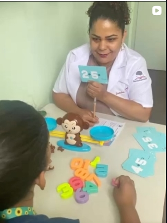
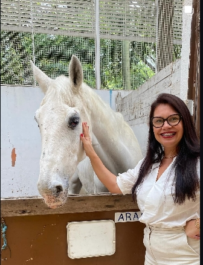
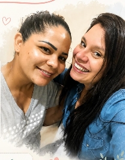
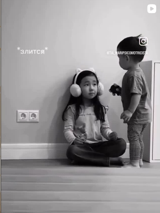
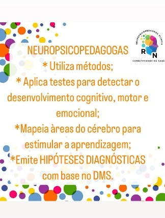
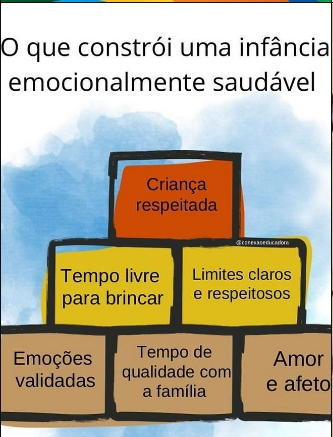
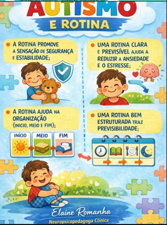
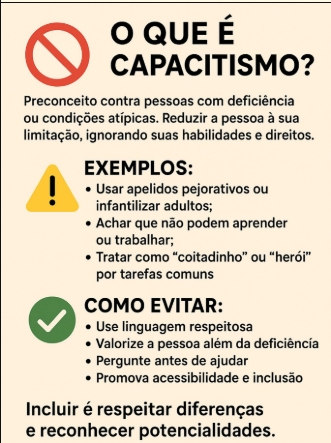
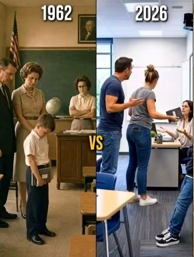

Desenvolvimento cognitivo
Estímulo de funções vitais como memória, atenção, foco, raciocínio lógico e planejamento estratégico.
Entenda como esse profissional pode contribuir com a ativação cognitiva da sua criança. Cuidar da mente é abrir caminhos para o futuro.


Quem somos
Somos Elaine Romanha Pavechi e Sandra Nobre, Neuropsicopedagogas Clínicas. Nosso trabalho em Osasco, SP, é focado em entender como o cérebro absorve informações e em ajudar crianças a superarem barreiras de aprendizagem, devolvendo a elas a autoestima e o prazer de aprender.
Como podemos contribuir
Cada criança aprende de um jeito. Nosso trabalho é entender qual é esse jeito — e trabalhar a partir dele.
Estímulo de funções vitais como memória, atenção, foco, raciocínio lógico e planejamento estratégico.
Técnicas que transformam o estudo em algo prático e compreensível, respeitando o ritmo da criança.
Trabalho integrado para que o estudante ganhe confiança em si mesmo e perca o medo de errar.
Orientação próxima aos pais para que o suporte e a evolução continuem também dentro de casa.
Do primeiro contato ao relatório
Você conta o que tem observado. Juntos, verificamos se a avaliação é o caminho certo agora.
As duas primeiras sessões são dedicadas a ouvir os responsáveis e reunir o histórico de desenvolvimento.
Aplicação de instrumentos e testes específicos, no ritmo que a criança precisa, até 10 sessões.
Devolvemos o RAN, com resultados e recomendações para a família, a escola e os demais profissionais.
Serviço principal
Tem como objetivo identificar e compreender as dificuldades que podem estar interferindo no processo de aprendizagem da criança ou adolescente. Por meio de procedimentos científicos e observações clínicas, fazemos um mapeamento das habilidades cognitivas, acadêmicas, emocionais e motoras.
Ao final do processo é elaborado o Relatório Avaliativo Neuropsicopedagógico, contendo a descrição de todo o percurso avaliativo, os resultados observados e as orientações para a família, a escola e os demais profissionais envolvidos.
Quando pertinente, hipóteses diagnósticas poderão ser descritas com base nos critérios estabelecidos pelo DSM-5, sempre respeitando os limites de atuação da Neuropsicopedagogia.
Nosso trabalho
Clique em qualquer imagem para ver em tamanho maior.



Conteúdos
Material produzido pelas nossas profissionais para famílias e escolas. Clique para ampliar.





Dúvidas frequentes
Quando a dificuldade persiste apesar do esforço: a criança evita ler, "não presta atenção", tem baixo rendimento, sofre com cobranças ou perdeu o interesse por aprender. Quanto antes isso é entendido, mais curto é o caminho.
Não. As sessões são feitas com material lúdico e no ritmo da criança. A maior parte do tempo é jogos, conversas e tarefas adequadas à idade — nada invasivo.
São até 10 sessões. As duas primeiras são de anamnese com os responsáveis; as demais são de aplicação dos instrumentos. A frequência é combinada no primeiro contato.
Sim. O RAN é escrito para ser usado pela família e pela equipe escolar, com orientações práticas. Quando pertinente, inclui hipóteses diagnósticas com base no DSM-5, dentro dos limites da Neuropsicopedagogia.
O atendimento é presencial, em Osasco/SP. No primeiro contato verificamos juntos a melhor forma de organizar as sessões para a rotina da sua família.
Na anamnese é útil ter em mãos boletins, relatórios da escola, avaliações anteriores e qualquer laudo que já tenha sido emitido. Esses materiais ajudam a montar o histórico.
Contato
Preencha o formulário e escolha o canal para enviar. Respondemos pelo retorno que você indicar.